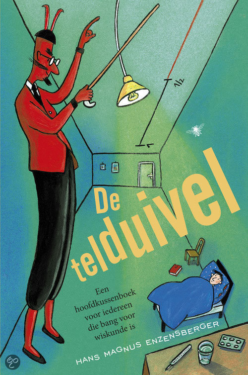

De telduivel en de "Driehoek van Pascal"
De telduivel vertelt Robert allemaal leuke trucjes met de Driehoek van Pascal, maar het is wel heel veel werk om die allemaal zelf uit te rekenen en te tekenen!
Driehoekengekte
Dat kan een computer toch veel beter?!
- Een kleine Driehoek van Pascal
- Een grote Driehoek van Pascal
- Even of oneven?
- Een mooi grote even/oneven Driehoek van Pascal
- Of hou je meer van driehoeken met de delers van drie, vier, vijf, zes, of zeven?!
- Maar zelfs een computer wordt het weleens teveel...

Hoe werkt het?
Het volgende stukje computercode tekent een Driehoek van Pascal van nl regels hoog.
We tekenen telkens de huidige rij (crow) op het "canvas" (ctx)
en berekenen vervolgens wat er in de volgende rij (nrow) moet komen te staan.
function tpascal(ctx,nl) {
// De eerste nieuwe rij bestaat uit een enkele "1"
var nrow = [ 1 ];
// De driehoek wordt nl regels hoog
for (var l = 0; l < nl; ) {
// De nieuwe rij wordt de huidige rij
var crow = nrow.slice(0);
// Op rij l komen nr vierkantjes
for (var nr = 0; nr <= l ; nr++) {
// Teken het vierkantje...
if (crow[nr] % d == 0) {
// ... in kleuren c als de waarde deelbaar is door d
cell(ctx, c, crow[nr]);
} else {
// ... of in kleuren cc als dat niet zo is
cell(ctx, cc, crow[nr]);
}
// Bereken wat er op de volgende rij moet komen:
if (nr>0) { nrow[nr] = crow[nr - 1] + crow[nr]; }
}
// Plak nog een "1" achter de nieuwe rij en ga verder:
nrow.push(1);
linedown(ctx,++l);
}
}